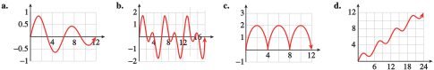
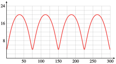
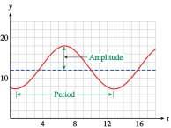
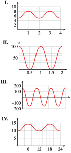
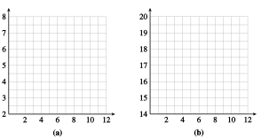
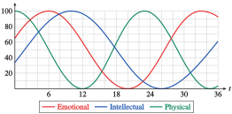

Section 2.8 Projects for Chapter 2: Periodic Functions
A periodic function is one whose values repeat at evenly spaced intervals, or periods, of the input variable. Periodic functions are used to model phenomena that exhibit cyclical behavior, such as growth patterns in plants and animals, radio waves, and planetary motion. In this project, we consider some applications of periodic functions.
Example 2.112.
Which of the functions in Figure 2.113 are periodic? If the function is periodic, give its period.
This graph is periodic with period \(360\text{.}\)
This graph is not periodic.
This graph is periodic with period \(8\text{.}\)
Project 2.4. Part I.
-
Which of the functions are periodic? If the function is periodic, give its period.

-
Which of the functions are periodic? If the function is periodic, give its period.
 -
Match each of the following situations with the appropriate graph.

When the heart contracts, blood pressure in the arteries rises rapidly to a peak (systolic blood pressure) and then falls off quickly to a minimum (diastolic blood pressure). Blood pressure is a periodic function of time.
After an injection is given to a patient, the amount of the drug present in his bloodstream decreases exponentially. The patient receives injections at regular intervals to restore the drug level to the prescribed level. The amount of the drug present is a periodic function of time.
The monorail shuttle train between the north and south terminals at Gatwick Airport departs from the south terminal every 12 minutes. The distance from the train to the south terminal is a periodic function of time.
Delbert gets a haircut every two weeks. The length of his hair is a periodic function of time.
-
A patient receives regular doses of medication to maintain a certain level of the drug in his body. After each dose, the patient's body eliminates a certain percent of the medication before the next dose is administered. The graph shows the amount of the drug, in milliliters, in the patient's body as a function of time in hours.

How much of the medication is administered with each dose?
How often is the medication administered?
What percent of the drug is eliminated from the body between doses?
-
You are sitting on your front porch late one evening, and you see a light coming down the road tracing out the path shown below, with distances in inches. You realize that you are seeing a bicycle light, fixed to the front wheel of the bike.
Approximately what is the period of the graph?
How far above the ground is the light?
What is the diameter of the bicycle wheel?
-
The graph shows arterial blood pressure, measured in millimeters of mercury (mmHg), as a function of time.

What are the maximum (systolic) and minimum (diastolic) pressures? The pulse pressure is the difference of systolic and diastolic pressures. What is the pulse pressure?
The mean arterial pressure is the diastolic pressure plus one-third of the pulse pressure. Calculate the mean arterial pressure and draw a horizontal line on the graph at that pressure.
The blood pressure graph repeats its cycle with each heartbeat. What is the heart rate, in beats per minute, of the person whose blood pressure is shown in the graph?
-
At a ski slope, the lift chairs take 5 minutes to travel from the bottom, at an elevation of 3000 feet, to the top, at elevation 4000 feet. The cable supporting the ski lift chairs is a loop turning on pulleys at a constant speed. At the top and bottom, the chairs are at a constant elevation for a few seconds to allow skiers to get on and off.
Sketch a graph of \(h(t)\text{,}\) the height of one chair at time \(t\text{.}\) Show at least two complete up-and-down trips.
What is the period of \(h(t)\text{?}\)
-
The heater in Paul's house doesn’t have a thermostat; it runs on a timer. It uses \(300\) watts when it is running. Paul sets the heater to run from 6 a.m. to noon, and again from 4 p.m. to 10 p.m.
Sketch a graph of \(P(t)\text{,}\) the power drawn by the heater as a function of time. Show at least two days of heater use.
What is the period of \(P(t)\text{?}\)
-
Francine adds water to her fish pond once a week to keep the depth at \(30\) centimeters. During the week, the water evaporates at a constant rate of \(0.5\) centimeter per day.
Sketch a graph of \(D(t)\text{,}\) the depth of the water, as a function of time. Show at least two weeks.
What is the period of \(D(t)\text{?}\)
-
Erin's fox terrier, Casey, is very energetic and bounces excitedly at dinner time. Casey can jump \(30\) inches high,and each jump takes him \(0.8\) second.
Sketch a graph of Casey's height, \(h(t)\text{,}\) as a function of time. Show at least two jumps.
What is the period of \(h(t)\text{?}\)
Many periodic functions have a characteristic wave shape like the graph shown in Figure 2.114. These graphs are called sinusoidal, after the trigonometric functions sine and cosine. They are often described by three parameters: the period, midline, and amplitude.
The period of the graph is the smallest interval of input values on which the graph repeats. The midline is the horizontal line at the average of the maximum and minimum values of the output variable. The amplitude is the vertical distance between the maximum output value and the midline.
Example 2.115.
The table shows the number of hours of daylight in Glasgow, Scotland, on the first of each month.
| Month | Jan | Feb | Mar | Apr | May | Jun | Jul | Aug | Sep | Oct | Nov | Dec |
| Daylight hours |
\(7.1\) | \(8.7\) | \(10.7\) | \(13.1\) | \(15.3\) | \(17.2\) | \(17.5\) | \(16.7\) | \(13.8\) | \(11.5\) | \(9.2\) | \(7.5\) |
Sketch a sinusoidal graph of daylight hours as a function of time, with \(t = 1\) in January.
Estimate the period, amplitude, and midline of the graph.
-
Plot the data points and fit a sinusoidal curve by eye, as shown in Figure 2.116.
Figure 2.116. The period of the graph is \(12\) months. The midline is approximately \(y = 12.25\text{,}\) and the amplitude is approximately \(5.25\text{.}\)
Project 2.5. Part II.
-
The graph shows the number of daylight hours in Jacksonville, in Anchorage, at the Arctic Circle, and at the Equator.

Which graph corresponds to each location?
What are the maximum and minimum number of daylight hours in Jacksonville?
For how long are there \(24\) hours of daylight per day at the Arctic Circle?
-
Match each of the following situations with the appropriate graph.
The number of hours of daylight in Salt Lake City varies from a minimum of \(9.6\) hours on the winter solstice to a maximum of \(14.4\) hours on the summer solstice.
A weight is \(6.5\) feet above the floor, suspended from the ceiling by a spring. The weight is pulled down to \(5\) feet above the floor and released, rising past \(6.5\) feet in \(0.5\) second before attaining its maximum height of \(8\) feet. Neglecting the effects of friction, the height of the weight will continue to oscillate between its minimum and maximum height.
The voltage used in U.S. electrical current changes from \(155\) V to \(-155\) V and back \(60\) times each second.
Although the moon is spherical, what we can see from Earth looks like a (sometimes only partly visible) disk. The percentage of the moon's disk that is visible varies between \(0\) (at new moon) to \(100\) (at full moon).
 As the moon revolves around the Earth, the percent of the disk that we see varies sinusoidally with a period of approximately 30 days. There are eight phases, starting with the new moon, when the moon's disk is dark, followed by waxing crescent, first quarter, waxing gibbous, full moon (when the disk is \(100\%\) visible), waning gibbous, last quarter, and waning crescent. Which graph best represents the phases of the moon?

-
The table shows sunrise and sunset times in Los Angeles on the fifteenth of each month.
Month Oct Nov Dec Jan Feb Mar Sunrise 5:58 6:26 6:51 6:59 6:39 6:04 Sunset 17:20 16:50 16:45 17:07 17:37 18:01 Month Apr May Jun Jul Aug Sep Sunrise \(5:22\) \(4:52\) \(4:42\) \(4:43\) \(5:15\) \(5:37\) Sunset \(18:25\) \(18:48\) \(19:07\) \(19:05\) \(18:40\) \(18:00\) Use the grid (a) to plot the sunrise times and sketch a sinusoidal graph through the points
Use the grid (b) to plot the sunset times and sketch a sinusoidal graph through the points.
 -
Use the data from Problem 4 to complete the table with the hours of sunlight in Los Angeles on the fifteenth of each month.
Month Oct Nov Dec Jan Feb Mar Hours of
daylight\(\hphantom{00000}\) \(\hphantom{00000}\) \(\hphantom{00000}\) \(\hphantom{00000}\) \(\hphantom{00000}\) \(\hphantom{00000}\) Month Apr May Jun Jul Aug Sep Hours of
daylight\(\hphantom{00000}\) \(\hphantom{00000}\) \(\hphantom{00000}\) \(\hphantom{00000}\) \(\hphantom{00000}\) \(\hphantom{000000}\) Plot the daylight hours and sketch a sinusoidal graph through the points.
-
-
Many people who believe in astrology also believe in biorhythms. The graph shows an individual's three biorhythms—physical, emotional, and intellectual—for \(36\) days, from \(t = 0\) on September 30 to November 5.
Find the dates of highest and lowest activity for each biorhythm during the month of October.
Find the period of each biorhythm in days
On the day of your birth, all three biorhythms are at their maximum. How old will you be before all three are again at the maximum level?
-
Is the function shown periodic? If so, what is its period? If not, explain why not.

Compute the difference between the maximum and minimum function values. Sketch in the midline of the graph.
Find the smallest positive value of \(k\) for which \(f (x) = f (x + k)\) for all \(x\text{.}\)
Find the smallest positive values of \(a\) and \(b\) for which \(f (b) - f (a)\) is a maximum.
-
-
Find the period, the maximum and minimum values, and the midline of the graph of \(y = f (x)\text{.}\)

Sketch a graph of \(y = 2 f (x)\text{.}\)
Sketch a graph of \(y = 2 + f (x)\text{.}\)
Modify the graph of \(f (x)\) so that the period is twice its current value.
-
-
The apparent magnitude of a star is a measure of its brightness as seen from Earth. Smaller values for the apparent magnitude correspond to brighter stars. The graph below, called a light curve, shows the apparent magnitude of the star Algol as a function of time. Algol is an eclipsing binary star, which means that it is actually a system of two stars, a bright principal star and its dimmer companion, in orbit around each other. As each star passes in front of the other, it eclipses some of the light that reaches Earth from the system. (Source: Gamow, 1965, Brandt & Maran, 1972)

The light curve is periodic. What is its period?
What is the range of apparent magnitudes of the Algol system?
Explain the large and small dips in the light curve. What is happening to cause the dips?
-
Some stars, called Cepheid variable stars, appear to pulse, getting brighter and dimmer periodically. The graph shows the light curve for the star Delta Cephei. (Source: Ingham, 1997)

What is the period of the graph?
What is the range of apparent magnitudes for Delta Cephei?
-
The figure is a tide chart for Los Angeles for the week of December 17–23, 2000. The horizontal axis shows time in hours, with \(t = 12\) corresponding to noon on December 17. The vertical axis shows the height of the tide in feet above mean sea level.

High tides occurred at 3:07 a.m. and 2:08 p.m. on December 17, and low tides at 8:41 a.m. and 9:02 p.m. Estimate the heights of the high and low tides on that day.
Is tide height a periodic function of time? Use the information from part (a) to justify your answer.
Make a table showing approximate times and heights for the high tides throughout the week. Make a similar table for the low tides
Describe the trend in the heights of the high tides over the week. Describe the trend in the heights of the low tides.
What is the largest height difference between consecutive high and low tides during the week shown? When does it occur?